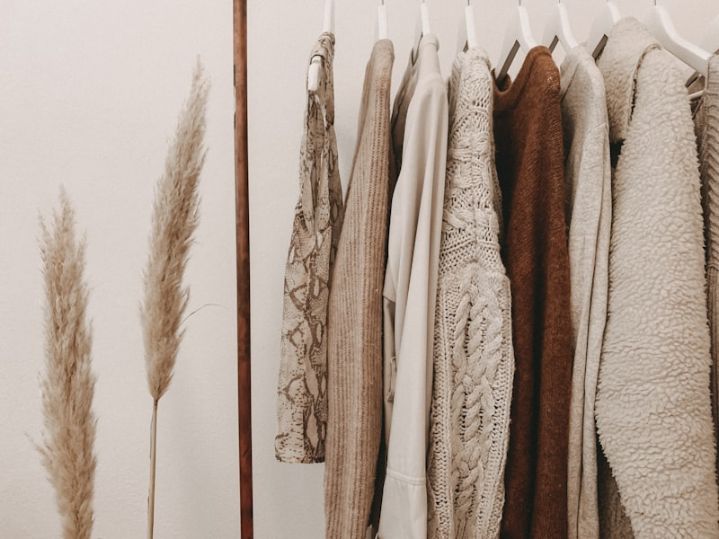

Atelier Notes & Couture Trends

Comfort Journal

How our master tailors align diagonal grain lines, shape silk folds, and verify seam drape.
Read Journal →
Understanding micron counts, pile construction, and loft ratings in luxury overcoats.
Read Journal →How to wash natural mulberry fibers, restore silk luster, and clean metallic hooks.
Read Journal →
Exploring velvet light absorption, lapel proportions, and matching silk accessories.
Read Journal →
From functional military rain protection to iconic high-society fashion staples.
Read Journal →
How our weavers guide threads, split patterns, and hand-sew custom silk linings.
Read Journal →
How to pair cashmere scarves, champagne coats, and leather boots for street shoots.
Read Journal →
How our hardware engineers cut, polish, and copper-coat metal snaps to prevent rust.
Read Journal →
How to fold structured lapels, select breathable dust bags, and fold silk dresses.
Read Journal →
How custom pad shapes allow full arm rotation without lifting the jacket hem line.
Read Journal →
An analysis of indigo vat reduction, walnut hulls boiling, and setting mineral locks.
Read Journal →How to fold structured dresses, select linen dust bags, and integrate cedar blocks.
Read Journal →